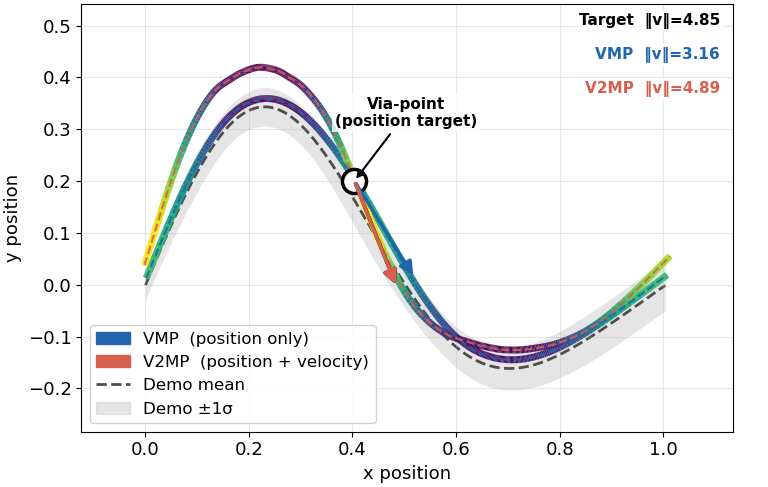
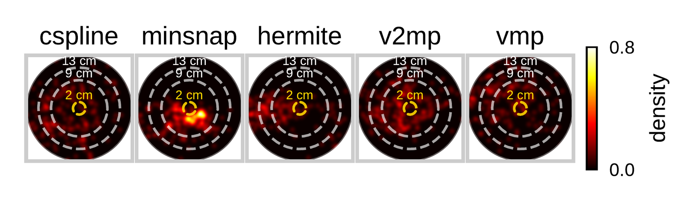
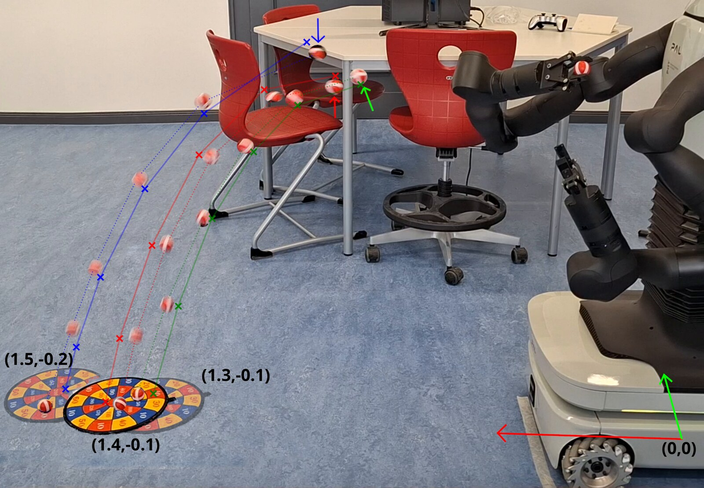
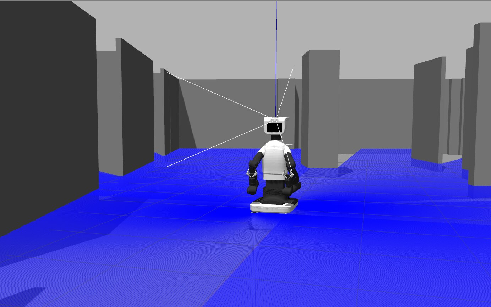
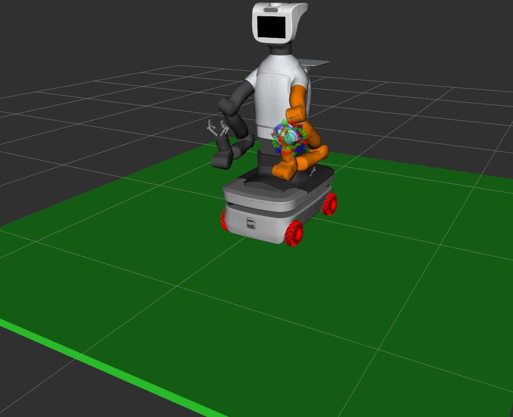

Movement Primitives
How does a robot learn movements from a person, and build tasks from them?
The release state decides the outcome
Movement primitives are compact motion representations learned from demonstration. A human shows the robot a skill once or a handful of times; the primitive captures the statistical structure of that motion and lets the robot adapt to new start positions, new targets, and new contexts without replanning from scratch each time.
Most existing formulations condition on where the end-effector should be. That is enough for reaching and placing. It is not enough for dynamic tasks, where success is decided not by a trajectory but by a single instant: the moment of release in a throw, the moment of contact in a strike. At that instant, both position and velocity matter. A robot that gets the position right but the speed wrong will miss.
This research area asks how primitives can be extended to treat velocity as a first-class quantity, conditioned on explicitly rather than derived after the fact, and how that richer representation connects to higher-level control and human-robot collaboration.
Teaching by demonstration
Skills are taught kinesthetically: a human physically guides the robot’s arm through the motion, and both position and velocity are recorded throughout. This produces a distribution over what a good motion looks like, covering shape, timing, and speed together. The robot does not optimise from scratch; it learns the manifold of demonstrated behaviour and generalises within it.
A human guides TIAGo’s arm through a throwing motion by hand. Position and velocity are recorded throughout, giving the robot a distribution over what a good throw looks like.
V2MP: Velocity-Aware Via-Point Movement Primitives
V2MP is the lab’s current work in this area. It extends via-point movement primitives so that via-points carry a target velocity alongside a target position, with both enforced jointly through closed-form probabilistic inference in an augmented state space.
At query time, candidate release states are sampled from the learned distribution and evaluated using a ballistic projectile model. The best candidate conditions the weight distribution of the primitive, producing a posterior trajectory that reaches the required position and velocity without any iterative solver. If a target lies outside the demonstrated range, a smooth fallback trajectory is constructed analytically, preserving continuity without distorting the learned shape.
Via-points carry a target velocity, not just a target position
The state at the moment of release, where the task is actually decided
Skills are shown by a human, then generalised by the robot
Demonstrated on one 7-DoF arm of our dual-arm humanoid, with the standard gripper

Given the same via-point position, position-only conditioning produces a release speed 35% below what the task requires. V2MP, conditioning on position and velocity together, matches the target.
Results Paper under review
Evaluated on TIAGo Pro across 105 hardware throws to 7 targets, V2MP achieves an 83.6% success rate at the dartboard radius (13 cm), the highest of all methods tested. At tighter tolerances, a geometry-driven baseline is more precise when dynamically compatible with the robot, but produces complete misses on some targets. V2MP stays within the demonstrated motion manifold and is more consistent across the full target distribution.
The results below are from a manuscript that is currently under review and may change with the final published version.
TIAGo throwing to multiple targets across the workspace. Each throw is planned from the learned distribution: a release candidate is sampled, checked against the projectile model, and used to condition the arm trajectory, with no manual tuning per target.


Where this is going
Language-conditioned primitives
Rather than specifying a target numerically, a language model or vision-language model selects and parameterises the appropriate primitive from a description of the task or the scene. This would let a non-expert instruct the robot in natural language while the primitive handles the low-level motion.
Shared autonomy
In teleoperation, the human provides high-level intent and the primitive fills in the precise, velocity-critical details that are hard to specify manually. The goal is a clean division of labour between human judgment and learned motor skill.
Beyond throwing
The same release-state framing applies to catching, dynamic placing, striking, and any task where a brief event determines the outcome. Paired with the lab’s variable-stiffness arms and compliant hands, these tasks become physically tractable as well as learnable.
Platform
Experiments run on TIAGo Pro (PAL Robotics), a mobile dual-arm humanoid; throwing experiments use one of its two 7-DoF arms. Motions are planned in Cartesian task space and converted to joint commands via inverse kinematics. Simulation uses the corresponding Gazebo model; results are validated against hardware through matched rollouts.


Funding
This work is part of the SIRo Lab’s research on dynamic manipulation. It runs on the TIAGo Pro platform funded through the DFG project tele.interaction (533327659) and answers one of the lab’s four research questions, alongside mechanical intelligence, stiffness shaping and immersive teleoperation.
Related Publications
- R. Abyaad, H. Höppner: “Throwing beyond Tracking: Velocity-Aware Via-Point Movement Primitives for Release-State Conditioning,” under review, 2025.
Collaborators
Extends via-point movement primitives so that a via-point carries a target velocity as well as a target position, and works on composing tasks from a library of learned skills.
Principal investigator.
Content reviewed with the lab on 18 September 2026. Statements about what exists, what has been shown and what is planned refer to that date.